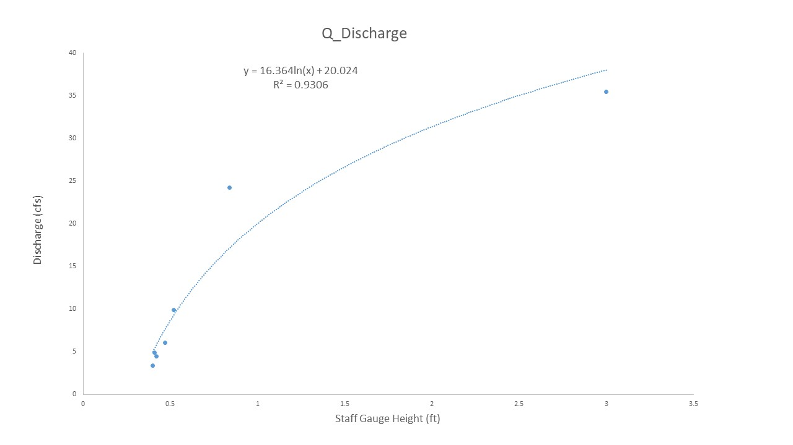

3 Miller Creek Discharge & Flow Rate
3.0.1 Introduction
Hydrology fieldwork focusing on flow and discharge is being conducted throughout the Miller Creek drainage in Fall 2020 - Spring 2021.
Near the mouth of Miller Creek, a discharge measurement station was installed in October 2020. At this site a pressure transducer measures water level, and discharge measurements are collected periodically using a SondeTek FlowTracker Acoustic Doppler Velocimeter. These data, along with staff plate observations, are being used to create a rating discharge curve.
An experiment to study stream flow rate in Miller Creek was conducted September 15-17, 2021. A plug of dissolved salt (NaCl) was discharged in to the creek, and the resultant spike in conductivity was observed downstream 0.64 km stream distance.
Raw water quality field data is stored in a Google Sheet that can be viewed at https://tinyurl.com/kwf-vogel-wqx-data under the “Discharge Measurements” tab.
Site photos are available through a point-and-click pop-up map at https://arcg.is/0fqvb0.
3.0.2 Miller Creek Discharge Rating Curve
A discharge station was established in October 2020 near the mouth of Miller Creek, including a staff plate and Orpheus Mini pressure transducer.
Site visits were made opportunistically depending on precipitation throughout Summer/Fall 2021, and once in Spring 2022. At each site visit, the pressure transducer is downloaded and a discharge measurement is collected using a SondeTek Flowtracker. See Figure ?? for the discharge rates and staff plate values observed to date.
A total of seven discharge measurements at the Miller Creek mouth site were made between Fall 2020 and Spring 2022. A curve was fit to the scatter plot of stage height vs. discharge. This relationship may be used in conjunction with pressure transducer data to create a flow hydrograph.
The rating curve for the outlet of Miller Creek and it’s source data may be accessed from the downloadable Excel file below:
Download Miller Creek Outlet Rating Curve Dataknitr::include_graphics("output/discharge_results/discharge_rating_curve_20220912.jpg")
3.0.3 Pressure Transducer Data
An Orpheus Mini pressure transducer was deployed at the mouth of Miller Creek from October 2020 through September 2022
3.0.4 Discharge measurements at other sites
Additional discharge measurements were taken throughout Summer 2021 at two additional sites near Vogel Lake, near the outlets of Kuguyuk Pond and Bird Pond. See Figure 3.1 for discharge values observed to date.
Figure 3.1: Other discharge measurements
3.0.5 Stream Flow Rate Experiment
On September 15-17, 2021 we conducted an experiment to examine stream flow rate in Miller Creek. We measured downstream transport time of dissolved solutes by deploying a plug of dissolved salt and measuring a resultant change in conductivity at a site downstream.
3.0.5.0.1 Methods
We deployed a plug of dissolved salt into the Miller Creek stream channel and measured conductivity continuously at a downstream site. See Figure 3.2 for salt deployment and conductivity monitoring sites.

Figure 3.2: Stream Flow Rate Study Area. Stream distance between the NaCl release site and the downstream measurement site is 0.63 km (0.39 mi).
The Vogel Lake / Miller Creek system is a low-gradient drainage with little observable flow within 0.5 miles downstream of the lake outlet. We deployed our salt plug downstream from the Vogel Lake outlet at the first site with visibly evident surface flow, which was over the top of the first downstream beaver dam.
We released 140 lbs of dissolved NaCl by dissolving appx 15 lbs at a time in a 35 gallon trash can, then discharging it on the downstream side of the beaver dam into the stream channel. Our downstream site monitoring conductivity was 0.63 km (0.39 mi) downstream center-channel.
To record conductivity we used a pair of simultaneously deployed Hydrolab MS5 Sondes suspended from a floating buoy. We programmed the sondes to record at 0.25 hour intervals. We examined the resultant time series for exposure or errors and removed these data points. We averaged conductivity values between the two Hydrolab units in the final results.
3.0.5.0.2 Results
We measured a readily evident rise in conductivity values at the downstream monitoring site. See Figure 3.3 for the time series of conductivity data.
Figure 3.3: Conductivity values at the site downstream of the NaCl release site. The NaCl plug was released at 19:30 on 9/15/2021. The release and measurement site coordinates can be accessed at the ArcGIS Online Map at https://arcg.is/0LqOKH0.
In Figure 3.3 we can observe the following:
Initial NaCl Deployment: 9/15/2021 19:30
Start of the rising limb of the conductivity spike: 9/15/2021 22:00 (2.5 hrs after deployment)
Maximum conductivity peak (~20% above baseline values): 01:30 9/16/2021 (6.0 hours after deployment)
Return to baseline conductivity levels: 9/16/2021 15:00 (19.5 hrs after deployment)
Based on these results, peak concentration of the dissolved solute traveled though this section of Miller Creek at 0.11 km/h (0.06 mph).